CONNECT WITH HEALTHY LIFE
CONNECT WITH HEALTHY LIFE
தேவையான பொருட்கள்:
தேவையான பொருட்கள்:
செய்முறை:
1. பீஜே சிகப்பரிசியை 4 மணி நேரம் ஊற வைத்து, நிழலில் காயவைத்து பொடியாக்கிக் கொள்ளவும்.
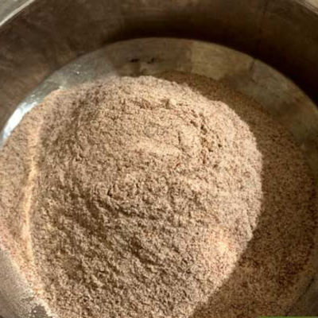
2. ஒரு பாத்திரத்தில் தண்ணீரை சூடாக்கி அதில் உப்பு சேர்த்துக் கொள்ளவும்.
3. பின்பு பொடியாக்கிய சிகப்பரிசியில் வெந்நீரை சிறிது சிறிதாக சேர்த்து புட்டு மாவு பதத்திற்கு செய்து கொள்ளவும்.
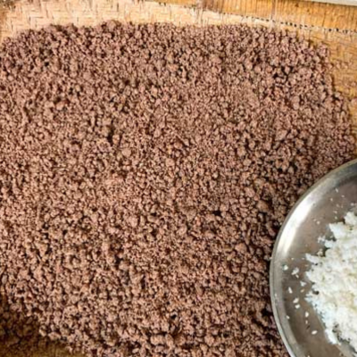
4. அதனை புட்டு குழலில் சிறிது சிகப்பரிசி புட்டு மாவு அதன் மேல் துருவிய தேங்காய் என வைத்து வேக வைக்கவும்.
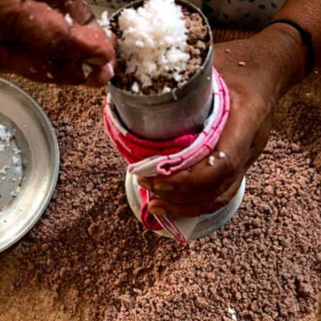
5. வெந்ததும் சிறிது ஏலக்காய்த்தூள், நெய் மற்றும் நாட்டு சர்க்கரை கலந்து சூடாக பரிமாறவும்.
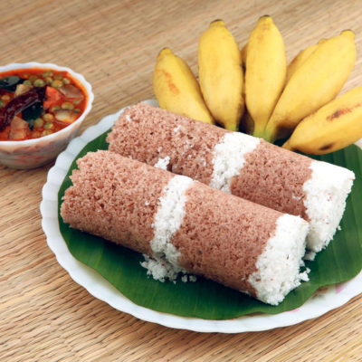
தேவையான பொருட்கள்:
செய்முறை:
1. வேகவைத்த பீஜே சிகப்பரிசி சாதத்தை தண்ணீர் ஊற்றி இரவு முழுவதும் ஊற வைக்கவும்.
 2. மறுநாள் ஊற வைத்த சிகப்பரிசி சாதத்தை நன்கு மத்து வைத்து கடைந்து கொள்ளவும்.
2. மறுநாள் ஊற வைத்த சிகப்பரிசி சாதத்தை நன்கு மத்து வைத்து கடைந்து கொள்ளவும்.
3. அதனுடன் கடைந்த மோர், சிறிது இஞ்சி, வெங்காயம், பெருங்காயம் மற்றும் உப்பு சேர்த்து கடைந்து கொள்ளவும்.
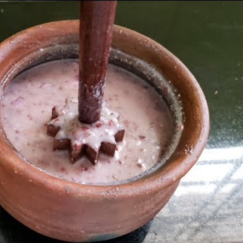
4. ஆரோக்கியமான சிகப்பரிசி நீராகாரம் தயார்.
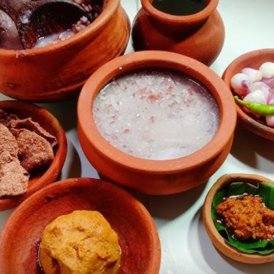
தேவையான பொருட்கள்:
செய்முறை:
1. பீஜே சிகப்பரிசியை 6-7 மணி நேரம் வரை ஊற வைக்கவும்.
2. சிறுபருப்பு, கடலைப்பருப்பு, துவரம் பருப்பு, உளுந்து ஆகியவற்றை 1 மணி நேரம் ஊற வைக்கவும்.
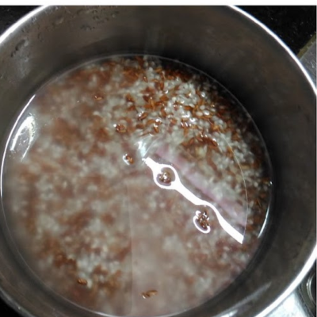
3. பின்பு அனைத்தையும், 10 வத்தல், 1 இஞ்சி துண்டு மற்றும் 1 ஸ்பூன் சோம்புடன் தண்ணீர் ஊற்றி தோசை மாவு பதத்திற்கு அரைத்துக் கொள்ளவும்.
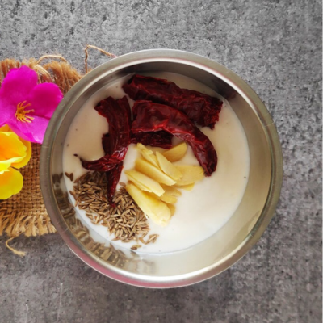
4.கடாயில்,எண்ணெய் ஊற்றி கடுகு, வத்தல், வெங்காயம் மற்றும் பெருங்காயம் சேர்த்து தாளித்து தோசை மாவில் ஊற்றவும்.
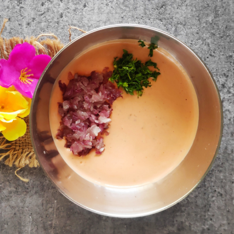
5. பின்பு தோசைக்கல்லில் தோசை ஊற்றி சூடாக பரிமாறவும்.
தேவையான பொருட்கள்:
செய்முறை:
1. பீஜே சிகப்பரிசியை 1/2 மணி நேரம் ஊறவைத்து, நிழலில் காயவைத்து, மிதமான தீயில் வறுத்து எடுக்கவும்.
2. 1/4 கப் வறுத்த வேர்க்கடலை, 1-2 டேபிள்ஸ்பூன் வறுத்த எள், வறுத்த சிகப்பரிசியை மிக்ஸியில் நன்கு அரைத்து கொள்ளவும்.
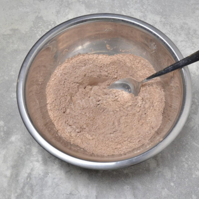
3. கடாயில் 1/2 கப் வெல்லம் 1/2 கப் தண்ணீர் சேர்த்து 2-3 நிமிடம் கொதிக்க விடவும்.
4. பின்பு பொடித்த சிகப்பரிசி கலவையுடன் வெல்ல பாகுவை கலந்து துருவிய தேங்காயை சேர்த்து உருண்டையாக பிடித்தால் சிகப்பரிசி உருண்டை தயார்.
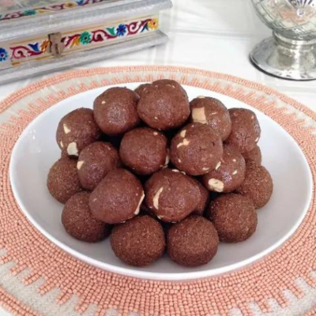